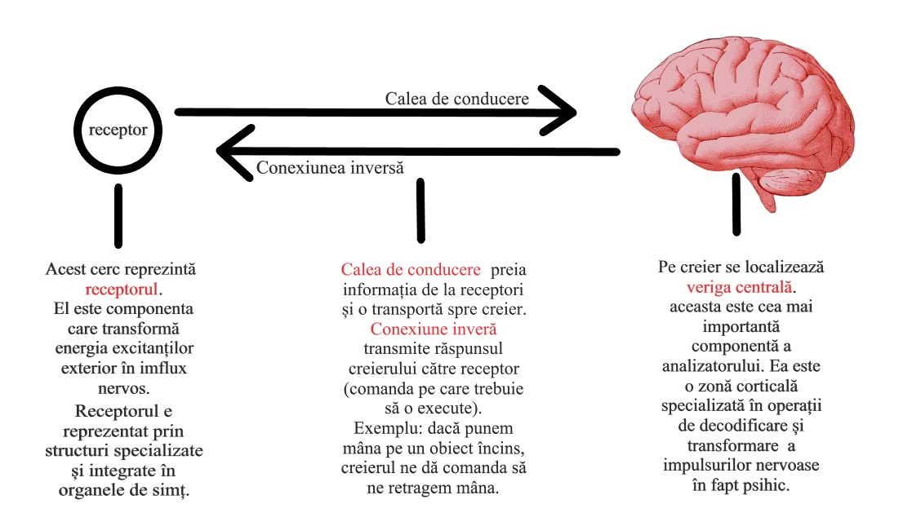

<div class="container">
    <div class="row">
        <div class="col-xs-12">
            <h1> Senzațiile</h1>
            <br>
            <button 
                type="button" 
                class="btn btn-primary col-xs-6" 
                (click)="onWhatAreSenzationClick()"> 
                Ce sunt senzatiile?
            </button>
            <br>
            <div *ngIf="whatAreSenzation === true">
                Senzatiile sunt procese psihice cognitiv-senzoriale prin care se cunosc <b>separat</b> insusirile generale si esentiale ale obiectelor si fenomenelor, in conditiile in care acestea actioneaza direct asupra analizatorilor.
            </div>
            <hr>
            <h3> Ce este un ananlizator?</h3>
            <h4> Senzațiile sunt rezultatul activității reflexe a analizatorilor ca răspuns la stimulările exterioare simple. Dar cum am putea defini analizatorul? </h4>
            <h4>Acesta este un sistem morfofunctional care face posibila producerea senzatiilor.</h4>
            <h4> Exemple de analizatori: analizator olfactiv, analizator vizual, analizator auditiv etc.</h4>
            <h4> <b>Din ce este format un analizator?</b></h4>
            
            <h3> Atentie!</h3>
            <h4> Nu putem pune egal intre analizator si organul receptor al acestuia. Retina, care se afla in structura ochiului, este doar receptorul pentru ananlizatorul vizual. </h4>
            <br>
            <h4>
               Pe de alta parte, ca analizatorul sa fie pus in practica, este nevoie de <b> stimul</b> pentru ca receptorii sa fie excitati. stimulul este cel care produce o reactie. <b> Reactia </b>este raspunsul la actiunea stimulului.
            </h4>
            <hr>
            <h3> Senzatiile pot fi: </h3>
            <h4>
                <ol>
                    <li>
                        <u>Senzatii exteroceptive</u> : (aduc informatii din mediul exterior) auditive, olfactive, gustative, cutanate;
                    </li>
                    <li>
                        <u>Senzatii proprioceptive</u> : (ne informeaza despre pozitia si miscarile propriului corp)
                        <ul>
                            <li>
                                senzatii de echilibru;
                            </li>
                            <li>
                                senzatii kinestezice/ de miscare;
                            </li>
                        </ul>
                    </li>
                    <li> 
                        <u>Senzatii interoceptive</u> 
                        <ul>
                            <li>
                                senzatii organice: exprima schimbarile care au loc in corpul nostru> scaderea concetratiei de substante nutritive in sange, a apei, a oxigenului etc.
                            </li>
                            <li> 
                                senzatii de durere: semnalizeaza tulburari functionale sau distrugeri de tesuturi organice.
                            </li>
                        </ul>
                    </li>
                </ol>
            </h4>
            <hr>
        </div>
    </div>
</div>
